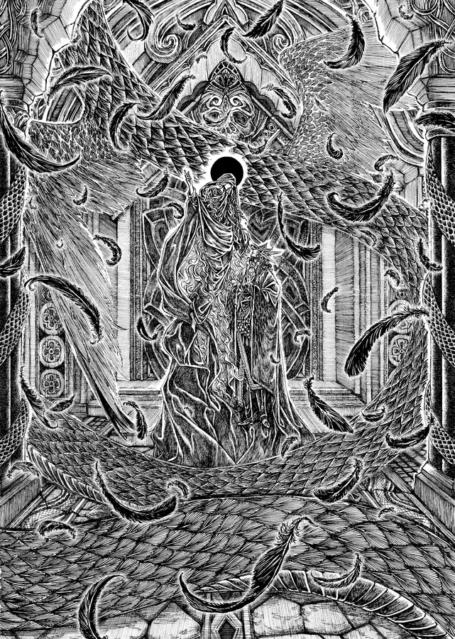

Overview
The Artificial Death was an attempted plan during the Fifth Epoch to turn the Uniqueness of the Death Pathway into a sentient being. The Numinous Episcopate's Artificial Death faction started it after their God, Death, perished at the hands of the Seven Orthodox Gods at the end of the Fourth Epoch.
It is made from the Uniqueness of Death along with half of Azik Eggers's soul. It was originally a resurrection plan left by Death.1
The Artificial Death is an activated Uniqueness combined with two types of Sefirot corruption brought by Death.2 It has no Sequence 1 characteristic attached.3
Appearance
It was a massive feathered serpent that seemed to occupy an entire island. It had huge, dark green scales that were nearly black. Amidst the gaps were feathers covered in yellow oily stains. On every feather, thin illusory black tubes extended outwards. The exaggerated feathered serpent was both illusory and real, its actual form hardly describable. It seemed to be a combination of things incomprehensible to humans. Its eye sockets burned with pale white flames. Its face was that of a human, and it looked like another Azik Eggers.4
History
Origins
The original goal of the project was to revive Death. The present upper echelons of the Numinous Episcopate had gained inspiration from the Hidden Sage's sudden coming to life and turning anthropomorphic.5 They used a series of sacrificial rituals and the transformation of their own High-Sequence Beyonders across hundreds of years to influence Death's remains via backward propagation, causing the Uniqueness of Death to generate some form of sentience.6
Though they failed in reviving Death, the Numinous Episcopate managed to create an artificial god. It also gained certain innate abilities, as it began influencing any High-Sequence Death Beyonders who failed their advancements, like the former chief of the City of Silver, Hawick. However, it was still unable to reply to prayers and rituals.7
Destruction
Azik Eggers and Klein explored Death's treasure trove at the Berserk Sea where the Artificial Death is, resulting in the attempted fusion of both halves of Azik Eggers' soul and starting Death's revival. The Evernight Goddess prevented the resurrection of Death by appearing at the last minute and taking the Uniqueness of the Death Pathway.8
Consequences
Because the Evernight Goddess obtained the Uniqueness, the God of Combat and his allies started the 1350 World War to prevent her progression.
See also
Artificial Death Product's White Feathers, the physical remains the project left behind.
References
- Book 1, chapter 915.
- Author's WeChat post red_priest, part 6.
- Author's WeChat post visionary_formulas, part 26.
- Book 1, chapter 915.
- Book 1, chapter 688.
- Book 1, chapter 904.
- Book 1, chapter 914.
- Book 1, chapter 917.
Source
Article adapted from Artificial Death on the Lord of the Mysteries Fandom wiki (CC BY-SA). Chapter numbers follow that article's citation format.
Image gallery
